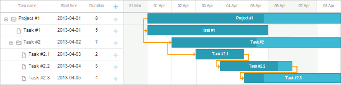

To pay user's attention to specific time slot(s), you may highlight them.
The template is a function that goes over all the dates and applies the specified CSS class to the related cells.

For example, you can highlight weekends to visually divide the scale into weeks:
<style>
.weekend{ background: #f4f7f4 !important;}
</style>
gantt.templates.scale_cell_class = function(date){
if(date.getDay()==0||date.getDay()==6){
return "weekend";
}
};
gantt.templates.timeline_cell_class = function(task,date){
if(date.getDay()==0||date.getDay()==6){
return "weekend" ;
}
};
gantt.init("gantt_here");
Note that while using work time calculations, you can use isWorkTime instead of hardcoded values:
gantt.config.work_time = true;
gantt.templates.scale_cell_class = function(date){
if(!gantt.isWorkTime(date)){
return "weekend";
}
};
gantt.templates.timeline_cell_class = function(task,date){
if(!gantt.isWorkTime({task:task, date:date})){
return "weekend" ;
}
};
gantt.init("gantt_here");
Related sample: Highlighting weekends
Use the 'important' keyword to guarantee that the specified CSS property will be applied to the cell.